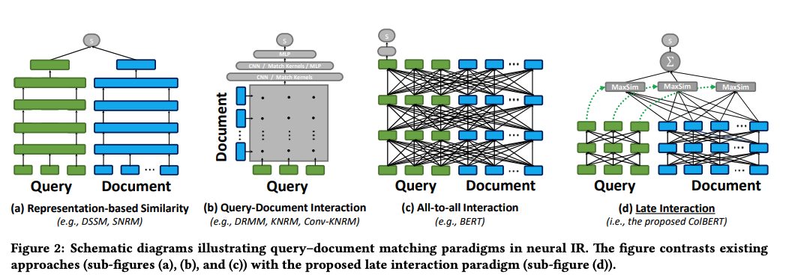

ColBERT and Information Retrieval
I recently learned about ColBERT, a BERT-based model for efficient passage retrieval. The authors of the paper ColBERT: Efficient and Effective Passage Search via Contextualized Late Interaction over BERT claim that ColBERT is able to achieve state-of-the-art performance on the MS MARCO passage ranking task while being 10x faster than the previous state-of-the-art model. This is a post to summarize my learnings about ColBERT and how it compares to dense retrieval methods like BERT and sentence-transformers.
ColBERT vs. BERT vs. Traditional IR Methods
First ColBERT stands for contextualized late interaction over BERT, hence the name ColBERT.

As 2d illustrates, ColBERT relies on fine-grained contextual late interaction: it encodes each passage into a matrix of token-level embeddings (shown above in blue). Then at search time, it embeds every query into another matrix (shown in green) and efficiently finds passages that contextually match the query using scalable vector-similarity (MaxSim) operators.
Figure 2 also nicely summarizes pre-BERT retrieval methods.
Pre-BERT Methods
- 2a: Representation-based similarity - Here you have a bi-encoder where you create representations that are dense embeddings of the query and document separately and interact them somehow (cosine similarity)
- 2b: Query-Document interaction - Compute similarity pairs of all documents and queries and then do some aggregation of these
BERT Methods
This is represent in Figure 2c: All-to-all interaction (BERT)
This has been the state of the art of the it is computationally very expensive. BERT can be used in Bi-Encoders and Cross-Encoders. This post from sbert explains it quite well.
- Bi-Encoders produce an embedding for each input sentence. So for two sentences, two embeddings are produced and these can be compared using cosine similarity.
- With Cross-Encoders, both input sentences are passed at the same time to the Transformer, it produces not an embedding but a value between 0 and 1 that represents the similarity between the two sentences.
- Cross-Encoders achieve better performance than Bi-Encoders but for many large scale information retrieval applications they are not practical because since embeddings are not produced, there is no way to index the data and retrieve it efficiently.
- From the above post: “Bi-Encoders are used whenever you need a sentence embedding in a vector space for efficient comparison. Applications are for example Information Retrieval / Semantic Search or Clustering. Cross-Encoders would be the wrong choice for these application: Clustering 10,000 sentence with CrossEncoders would require computing similarity scores for about 50 Million sentence combinations, which takes about 65 hours. With a Bi-Encoder, you compute the embedding for each sentence, which takes only 5 seconds. You can then perform the clustering.”
- You can combine Bi-Encoders and Cross-Encoders. Use Bi-Encoders to retrieve the top-k documents and then use Cross-Encoders to re-rank the top-k documents. An example for this common retrieve and re-rank strategy is here.
ColBERT
ColBERT creates query and document embeddings (notably at the token level). From the paper: “Every query embedding interacts with all document embeddings via a MaxSim operator, which computes maximum similarity (e.g. cosine similarity), and the scalar outputs of these operators are summed across query terms.”
With BERT or even sentence-transformers, you need to embed the entire text into one embedding for both the query and the document (call this the single-vector approach). But with ColBERT, we are generating contextualized embeddings for each token (e.g. bank could appear multiple times and have different meanings in the same document). Call this the multi-vector approach, the paper calls this “bag of contextualized embeddings” which had me confused for awhile. But it’s simply moving for a 1 x d representation to a m x d representation where m is the number of tokens in the document.
Shout out to the author of the RAGatouille library who also wrote a fantastic post making the case for these late interaction retrievers like ColBERT. He has a section comparing the pros and cons of:
- BM25/Keyword Sparse Retrieval
- Cross-Encoders
- Dense Retrieval/Embeddings
The main downside of dense retrieval methods is they often generalize poorly whereas ColBERT has shown strong generalization capabilities.
RAGatouille
RAGatouille is a library that makes using ColBERT easier. I haven’t used the original ColBERT code but RAGatouille is very easy to get started with.
First you need to index your documents which is a few lines of code. This will create the token level embeddings for each and persist it to disk. This will act as basically your vector database that you’ll use to compare against your query.
from ragatouille import RAGPretrainedModel
from ragatouille.utils import get_wikipedia_page
from ragatouille.data import CorpusProcessor
RAG = RAGPretrainedModel.from_pretrained("colbert-ir/colbertv2.0")
my_documents = [get_wikipedia_page("Hayao_Miyazaki"), get_wikipedia_page("Studio_Ghibli")]
processor = CorpusProcessor()
my_documents = processor.process_corpus(my_documents)
index_path = RAG.index(index_name="my_index", collection=my_documents)Then you can run queries on this index.
from ragatouille import RAGPretrainedModel
query = "ColBERT my dear ColBERT, who is the fairest document of them all?"
RAG = RAGPretrainedModel.from_index("path_to_your_index")
results = RAG.search(query)The search results are turned either as a list of dictionaries or a list of list of dictionaries depending on if you passed in a single or multi-query.
# single-query result
[
{"content": "blablabla", "score": 42.424242, "rank": 1},
...,
{"content": "albalbalba", "score": 24.242424, "rank": k},
]
# multi-query result
[
[
{"content": "blablabla", "score": 42.424242, "rank": 1},
...,
{"content": "albalbalba", "score": 24.242424, "rank": k},
],
[
{"content": "blablabla", "score": 42.424242, "rank": 1},
...,
{"content": "albalbalba", "score": 24.242424, "rank": k},
],
]It is also easy to convert this ColBERT model into a langchain retriever to use in any langchain chain.
retriever = RAG.as_langchain_retriever(k=3)You can use this to retrieve documents
retriever.invoke("What animation studio did Miyazaki found?")
# [Document(page_content='In April 1984, Miyazaki opened his own office in Suginami Ward, naming it Nibariki.\n\n\n=== Studio Ghibli ===\n\n\n==== Early films (1985–1996) ====\nIn June 1985, Miyazaki, Takahata, Tokuma and Suzuki founded the animation production company Studio Ghibli, with funding from Tokuma Shoten. Studio Ghibli\'s first film, Laputa: Castle in the Sky (1986), employed the same production crew of Nausicaä. Miyazaki\'s designs for the film\'s setting were inspired by Greek architecture and "European urbanistic templates".'),
# Document(page_content='Hayao Miyazaki (宮崎 駿 or 宮﨑 駿, Miyazaki Hayao, [mijaꜜzaki hajao]; born January 5, 1941) is a Japanese animator, filmmaker, and manga artist. A co-founder of Studio Ghibli, he has attained international acclaim as a masterful storyteller and creator of Japanese animated feature films, and is widely regarded as one of the most accomplished filmmakers in the history of animation.\nBorn in Tokyo City in the Empire of Japan, Miyazaki expressed interest in manga and animation from an early age, and he joined Toei Animation in 1963. During his early years at Toei Animation he worked as an in-between artist and later collaborated with director Isao Takahata.'),
# Document(page_content='Glen Keane said Miyazaki is a "huge influence" on Walt Disney Animation Studios and has been "part of our heritage" ever since The Rescuers Down Under (1990). The Disney Renaissance era was also prompted by competition with the development of Miyazaki\'s films. Artists from Pixar and Aardman Studios signed a tribute stating, "You\'re our inspiration, Miyazaki-san!"')]But you can also use the retriever in a RAG chain too:
from langchain.chains import create_retrieval_chain
from langchain.chains.combine_documents import create_stuff_documents_chain
from langchain_core.prompts import ChatPromptTemplate
from langchain_openai import ChatOpenAI
prompt = ChatPromptTemplate.from_template(
"""Answer the following question based only on the provided context:
<context>
{context}
</context>
Question: {input}"""
)
llm = ChatOpenAI()
document_chain = create_stuff_documents_chain(llm, prompt)
retrieval_chain = create_retrieval_chain(retriever, document_chain)
retrieval_chain.invoke({"input": "What animation studio did Miyazaki found?"})
# the retrieved documents and answer will be returned
{'input': 'What animation studio did Miyazaki found?',
'context': [Document(page_content='In April 1984, Miyazaki opened his own office in Suginami Ward, naming it Nibariki.\n\n\n=== Studio Ghibli ===\n\n\n==== Early films (1985–1996) ====\nIn June 1985, Miyazaki, Takahata, Tokuma and Suzuki founded the animation production company Studio Ghibli, with funding from Tokuma Shoten. Studio Ghibli\'s first film, Laputa: Castle in the Sky (1986), employed the same production crew of Nausicaä. Miyazaki\'s designs for the film\'s setting were inspired by Greek architecture and "European urbanistic templates".'),
Document(page_content='Hayao Miyazaki (宮崎 駿 or 宮﨑 駿, Miyazaki Hayao, [mijaꜜzaki hajao]; born January 5, 1941) is a Japanese animator, filmmaker, and manga artist. A co-founder of Studio Ghibli, he has attained international acclaim as a masterful storyteller and creator of Japanese animated feature films, and is widely regarded as one of the most accomplished filmmakers in the history of animation.\nBorn in Tokyo City in the Empire of Japan, Miyazaki expressed interest in manga and animation from an early age, and he joined Toei Animation in 1963. During his early years at Toei Animation he worked as an in-between artist and later collaborated with director Isao Takahata.'),
Document(page_content='Glen Keane said Miyazaki is a "huge influence" on Walt Disney Animation Studios and has been "part of our heritage" ever since The Rescuers Down Under (1990). The Disney Renaissance era was also prompted by competition with the development of Miyazaki\'s films. Artists from Pixar and Aardman Studios signed a tribute stating, "You\'re our inspiration, Miyazaki-san!"')],
'answer': 'Miyazaki founded Studio Ghibli.'}See this langchain tutorial page for more information.
Links
- ColBERT paper
- ColBERTv2 paper
- ColBERT Github Repo
- I’ve used ColBERT through the RAGatouille library which makes it really easy to get started and converted it to a langchain retriever using this tutorial.
- Cool webapp to visualize ColBERT embeddings via a browser
- Simon Willison also wrote a short post about his learnings about ColBERT